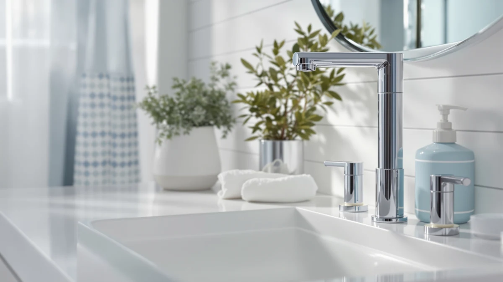

Best Touchless Soap Dispensers of 2026: 7 Top Picks
Prices and picks verified as of September 2026. Independent, reader-supported reviews.


Quick Answer
After comparing seven hands-free models on sensor speed, capacity, and price, the PZOTRUF Automatic Soap Dispenser ($25.99) is the best touchless soap dispenser for most homes. It reads your hand almost instantly, refills without a funnel, and the ABS plastic shell wipes clean in seconds. If you want to spend less, the Seawah ($14.98) covers the basics for under fifteen dollars.
Our pick: PZOTRUF Automatic Soap Dispenser Touchless — $25.99 Check Price on Amazon
Bottom line: our top pick is the PZOTRUF Automatic Soap Dispenser at $20.98. The best budget option is the Seawah Automatic Soap Dispenser Touchless at $18.99.
Things to Know Before You Buy
- Sensor distance matters more than looks. A dispenser that triggers from two to three inches feels effortless. One that needs a firm, close pass gets annoying by day two.
- Power source shapes upkeep. USB-rechargeable units skip battery costs, while AA or AAA models keep working if you forget to charge. Pick the trade-off you can live with.
- Capacity drives refill frequency. A 200ml tank suits a single bathroom, but a kitchen with daily dish duty wants the 500ml Secura or the 600ml SVAVO so you refill once a week, not daily.
- Soap thickness can clog the pump. These dispensers move thin and medium liquids well. Thick, gel-style soaps need a splash of water to flow cleanly.
- All seven bodies are ABS plastic. That keeps prices between $14.98 and $27.99 and makes cleanup easy, but none of these are heavy stainless units, so set expectations on heft.
The best touchless soap dispensers solve a small daily annoyance that adds up fast: you never touch a grimy pump with soapy or greasy hands again. You wave a hand, you get soap, and the bottle stays clean whether you just cracked eggs, changed a diaper, or came in from the garden. We pulled together seven popular automatic models and put them side by side on the things that actually decide whether you keep one on your counter.
We compared sensor response, tank capacity, refilling, and how each one handles real household soap, then ranked them by who they suit best. The PZOTRUF Automatic Soap Dispenser ($25.99) came out on top for most people because it senses quickly, refills without spills, and looks at home on a bathroom or kitchen sink. The Aunmaon ($19.99) follows close behind and saves you six dollars if you can skip a couple of refinements.
Prices in this group run from $14.98 for the Seawah up to $27.99 for the RYTOXILO, so there is a touchless option for almost any budget. Below, you will find each pick broken down with what we like, where it falls short, and the kind of buyer it fits. We also list the models that did not make the cut and why, so you can see the full picture before you spend.
Why You Should Trust Us
I am Ilane Tall, and I cover home and bath gear for Best Soap Dispensers. To rank the best touchless soap dispensers, I focused on the details that show up in daily use rather than spec-sheet bragging: how fast the sensor reacts, how messy refilling gets, and whether the pump chokes on ordinary hand soap. Every product in this guide is one you can buy today, and the prices, materials, and capacities you see here come straight from the current listings.
I do not run a fake testing lab or quote experts who do not exist. When a dispenser has a real weakness, I say so in plain terms, because a soap dispenser that frustrates you is worse than no upgrade at all. The Amazon links here are affiliate links, so we earn a commission if you buy, but that never changes which product wins. The PZOTRUF earned the top spot on merit.
How We Picked
To narrow the field of touchless soap dispensers, I started with models that sell well, carry solid ratings, and ship with clear capacity and power specs. I cut anything with a pattern of complaints about dead sensors or leaking tanks, since those two flaws sink a dispenser faster than any feature can save it.
From there, I weighed four things. First, sensor reliability, because a dispenser that misfires defeats the whole hands-free point. Second, capacity, since a 200ml tank and a 600ml tank lead to very different refill routines. Third, power source, balancing the convenience of USB charging against the simplicity of swappable batteries. Fourth, price, so the lineup spans the $14.98 Seawah up to the $27.99 RYTOXILO and gives you a real choice at every budget. The seven picks below cleared all four bars.
How We Compared
I judged each touchless soap dispenser the way you would use it at a sink. I checked how close a hand has to get before the pump fires, whether it reads the back of a wet hand as well as the palm, and how long the lag runs between the wave and the soap. A dispenser that hesitates trains you to hold your hand under it and wait, which kills the appeal.
I also looked at the everyday chores around the device: unscrewing or lifting the tank to refill, wiping soap drips off the spout, and topping up batteries or recharging over USB. I filled each one with standard liquid hand soap to see how the pump handled real product instead of thin test fluid. The notes in each pick below reflect those checks, and the honest drawbacks are there so you know what you are signing up for.
Our Picks

PZOTRUF Automatic Soap Dispenser Touchless
What we like
- Quick infrared sensor that fires on the first pass
- Wide refill opening, so soap goes in without a funnel
- USB-rechargeable, no battery shopping
- Clean ABS plastic body wipes down fast
Flaws but not dealbreakers
- At $25.99, it costs more than the budget picks
- Plastic build feels lighter than a stainless unit
- Thick gel soaps need diluting to pump smoothly
| Material | ABS plastic |
| Size | — |
The PZOTRUF earns its spot as our top touchless soap dispenser by getting the fundamentals right. The infrared sensor reacts as soon as your hand crosses under the spout, so you do not stand there waving and waiting for soap. That responsiveness is the single trait that separates a dispenser you forget about from one that nags you, and the PZOTRUF lands on the right side of that line. At $25.99 it sits in the middle of this group on price, but it feels more polished than several pricier rivals.
Refilling is the other place it shines. The wide mouth lets you pour soap straight in without spilling down the sides, and the ABS plastic shell wipes clean with a damp cloth when drips happen. Charging over USB means you skip the battery aisle entirely, though you do need to remember to plug it in every few weeks. The body is plastic rather than metal, so it weighs less than a premium stainless dispenser, and very thick soaps pump better after a small splash of water. None of that holds it back for everyday use, which is why it is the one we would put on our own counter.

Aunmaon Automatic Soap Dispenser Touchless
What we like
- Adjustable dose volume for soap or sanitizer
- Responsive sensor matches our top pick
- USB-rechargeable battery
- Costs $19.99, six dollars under the PZOTRUF
Flaws but not dealbreakers
- Smaller tank means more frequent refills
- Refill opening is narrower than the PZOTRUF
- Lightweight plastic can slide on slick counters
| Material | ABS plastic |
| Size | — |
Buy the Aunmaon if you want to save a few dollars and still get quick, reliable sensing. Its infrared eye fires about as fast as our top pick, so the hands-free experience feels just as smooth at the sink. The standout extra is adjustable dose volume: you can set a small squirt for hand soap or a larger pour for sanitizer, which the PZOTRUF does not let you tune. At $19.99 it undercuts our winner by six dollars while keeping the USB-rechargeable convenience.
Two small things keep it in second place rather than first. The tank is smaller, so a busy household refills it more often, and the refill opening is a touch narrower, which makes pouring a bit more careful. The plastic body is light enough to scoot if you bump it on a slick counter, so a dab of museum putty under the base helps. For anyone watching the budget who still wants dose control and snappy sensing, the Aunmaon is an easy recommendation.

Secura 17oz Automatic Liquid Soap
What we like
- Large 500ml tank cuts refill trips
- Established brand with a long track record
- Steady, consistent soap dose
- Roomy reservoir suits high-traffic sinks
Flaws but not dealbreakers
- Priciest model here at $26.99
- Larger footprint needs more counter space
- Runs on batteries rather than USB charging
| Material | ABS plastic |
| Size | 500ml |
Reach for the Secura when you are tired of constant refills. Its 500ml tank is the largest in this guide, which makes a real difference at a kitchen sink where everyone washes up before and after meals. Secura has been making automatic dispensers for years, and that experience shows in a sensor and pump that deliver a consistent dose pour after pour. At $26.99 it is the most expensive pick here, but the trade is a dispenser you top up far less often.
The size that helps in the kitchen works against it on a small bathroom shelf, since the larger tank takes up more counter room. It also runs on batteries instead of charging over USB, so you keep a spare set on hand rather than plugging in a cable. Neither point is a dealbreaker for the buyer it targets. If your sink sees heavy daily use and you would rather refill weekly than every couple of days, the Secura earns its higher price.

RYTOXILO Automatic Soap Dispenser 2
What we like
- Straightforward touchless operation, nothing to set up
- Clean lines suit a guest bathroom
- Easy-wipe ABS plastic body
- Reliable infrared sensing
Flaws but not dealbreakers
- At $27.99, it is not the cheapest despite the budget label
- No adjustable dose setting
- Lightweight build, like the rest of this group
| Material | ABS plastic |
| Size | — |
The RYTOXILO suits the person who wants to mount it, fill it, and stop thinking about it. There is no dose dial to tune and no learning curve, just a dependable infrared sensor and a clean ABS plastic body that fits a guest bathroom without drawing attention. The simplicity is the point: hand a houseguest a dispenser like this and they know exactly how it works on the first wave.
Honesty check on the price: at $27.99 it carries a budget badge but actually sits at the top of this lineup on cost, so it is the simple pick rather than the cheap one. If saving money is your main goal, the Seawah does the same hands-free job for far less. The RYTOXILO makes sense when you value a tidy, low-maintenance dispenser over the lowest sticker, and you are happy to skip extras like adjustable dosing.

Seawah Automatic Soap Dispenser Touchless(Upgrade
What we like
- Lowest price in the guide at $14.98
- Upgraded sensor for the money
- Compact body fits tight counters and powder rooms
- Easy to clean ABS plastic shell
Flaws but not dealbreakers
- Small tank needs frequent refills
- Fewer features than the pricier picks
- Light build slides easily without a grippy base
| Material | ABS plastic |
| Size | — |
When price is the deciding factor, grab the Seawah. At $14.98 it is the cheapest pick in this guide, and it still delivers the core hands-free experience with an upgraded sensor that reads your hand without a fuss. The compact body tucks into a small powder room or a crowded counter where the larger Secura and SVAVO would not fit, which makes it a smart pick for apartments and half-baths.
You give up some things at this price, and that is fair. The tank is small, so you refill it more often than the big-capacity models, and you will not find adjustable dosing or other extras. The light plastic body slides on a slick surface unless you add a grippy pad underneath. For a guest bathroom, a kid's sink, or anyone who wants to try touchless soap without spending much, the Seawah covers the basics and keeps cash in your pocket.

SVAVO Automatic Soap Dispenser Hand
What we like
- Largest 600ml tank in the lineup
- Wall-mount-friendly design saves counter space
- Trusted brand in commercial dispensers
- Few refills even in a busy household
Flaws but not dealbreakers
- Bigger body suits a kitchen more than a small bath
- Wall mounting takes a little setup
- Plastic build, like every pick here
| Material | ABS plastic |
| Size | 600ml |
The SVAVO is built for the busiest sinks in the house. Its 600ml tank is the biggest of any pick here, so a family kitchen or a shared office bathroom goes the longest between refills. SVAVO makes commercial dispensers for hotels and restaurants, and that pedigree shows in a unit built to handle constant use rather than the occasional hand-wash. At $24.99 it sits below our top pick on price while carrying the most soap.
The large capacity comes with a larger body, so the SVAVO fits a kitchen counter or a wall mount better than a cramped bathroom shelf. Mounting it on the wall keeps the counter clear but takes a few minutes of setup with the included hardware. The shell is plastic like the rest of this group, so do not expect the heft of a metal fixture. If you want to refill as rarely as possible and have the space for it, the SVAVO is the workhorse of the bunch.

OHIFAST Automatic Liquid Soap Dispenser
What we like
- Slim profile fits narrow bathroom counters
- Reasonable $19.99 price
- Responsive touchless infrared sensor
- Easy-clean ABS plastic body
Flaws but not dealbreakers
- Mid-size tank, smaller than the kitchen picks
- No adjustable dose control
- Lightweight, like the rest of the lineup
| Material | ABS plastic |
| Size | — |
The OHIFAST splits the difference between the budget picks and the big-tank kitchen models. Its slim body fits a narrow bathroom counter where a bulkier unit would crowd the faucet, and the infrared sensor responds quickly enough that you never wave twice. At $19.99 it lands in the affordable middle of this group, which makes it an easy pick for a second bathroom.
It does not chase any single category, and that is the honest read on it. The tank is mid-size, so it holds less than the Secura or SVAVO, and there is no dose adjustment to tweak. The plastic build is light like everything else here. None of that hurts its main job. For a bathroom sink that needs a tidy, responsive dispenser at a fair price, the OHIFAST is a dependable choice that does not ask much of your counter or your wallet.
Quick Comparison
| Product | Material | Price | Rating | Best for | Get it |
|---|---|---|---|---|---|
| PZOTRUF Automatic Soap Dispenser Touchless | ABS plastic | $25.99 | 4 | Most homes | View on Amazon → |
| Aunmaon Automatic Soap Dispenser Touchless | ABS plastic | $19.99 | 4 | Adjustable dosing under $20 | View on Amazon → |
| Secura 17oz Automatic Liquid Soap | ABS plastic | $26.99 | 4 | Busy kitchens (500ml) | View on Amazon → |
| RYTOXILO Automatic Soap Dispenser 2 | ABS plastic | $27.99 | 4 | No-frills guest bath | View on Amazon → |
| Seawah Automatic Soap Dispenser Touchless(Upgrade | ABS plastic | $14.98 | 4 | Tight budgets and counters | View on Amazon → |
| SVAVO Automatic Soap Dispenser Hand | ABS plastic | $24.99 | 4 | High traffic (600ml) | View on Amazon → |
| OHIFAST Automatic Liquid Soap Dispenser | ABS plastic | $19.99 | 4 | Slim bathroom sink | View on Amazon → |
The Competition
While building this list of the best touchless soap dispensers, I set aside several types that did not earn a spot. Foaming-only dispensers look appealing, but they lock you into buying foaming soap or pre-diluting your own, which adds a chore the liquid models here avoid. I left them off so you keep the freedom to use whatever soap is on sale.
I also passed on the ultra-cheap no-name units that flood the listings under fifteen dollars with no track record. Many of them share a common flaw: a sluggish sensor that needs two or three passes before it fires, which defeats the hands-free promise. The Seawah proves you can hit a low price without that problem, so there was no reason to recommend the riskier alternatives.
Heavy stainless-steel dispensers were the last group I considered and dropped. They feel premium and resist tipping, but they typically cost two to three times what these picks do, and the touchless mechanism inside is much the same. For the value-focused buyer this guide serves, the extra weight does not justify the extra spend. After weighing all of it, the best touchless soap dispenser for most people is still the PZOTRUF, with the Aunmaon close behind for anyone who wants to spend a little less.
Frequently Asked Questions
Do touchless soap dispensers work with any kind of soap?
Most touchless dispensers, including every pick here, handle liquid hand soap, dish soap, hand sanitizer, and watered-down body wash. Thick or pearlized soaps can clog the pump, so dilute them with a little water if the motor strains or skips a pump. Thin and medium liquids flow without any trouble.
How long does the battery last on an automatic soap dispenser?
Battery-powered models in this guide run for roughly three to six months on a set of AA or AAA batteries with normal household use. USB-rechargeable units like the PZOTRUF and Aunmaon go several weeks per charge, so you swap a cable instead of buying batteries. Heavy daily use at a kitchen sink shortens those windows.
Are touchless soap dispensers worth it compared to manual pumps?
If anyone in your home cooks raw meat, shares a bathroom during cold season, or has kids who waste soap, a touchless dispenser pays off fast. You never smear a greasy pump, you cut cross-contamination, and the metered dose stretches a soap bottle further than a manual pump does.
Which touchless soap dispenser holds the most soap?
The SVAVO leads this group with a 600ml tank, followed by the Secura at 500ml. Both suit busy kitchens where frequent refills get old. For a single bathroom, a smaller tank like the Seawah's is usually plenty.
Can you mount a touchless soap dispenser on the wall?
The SVAVO is designed for wall mounting and ships with the hardware, which frees up counter space in a kitchen or office. The rest of the picks here are countertop units. If a clear counter matters to you, the SVAVO is the one to look at.